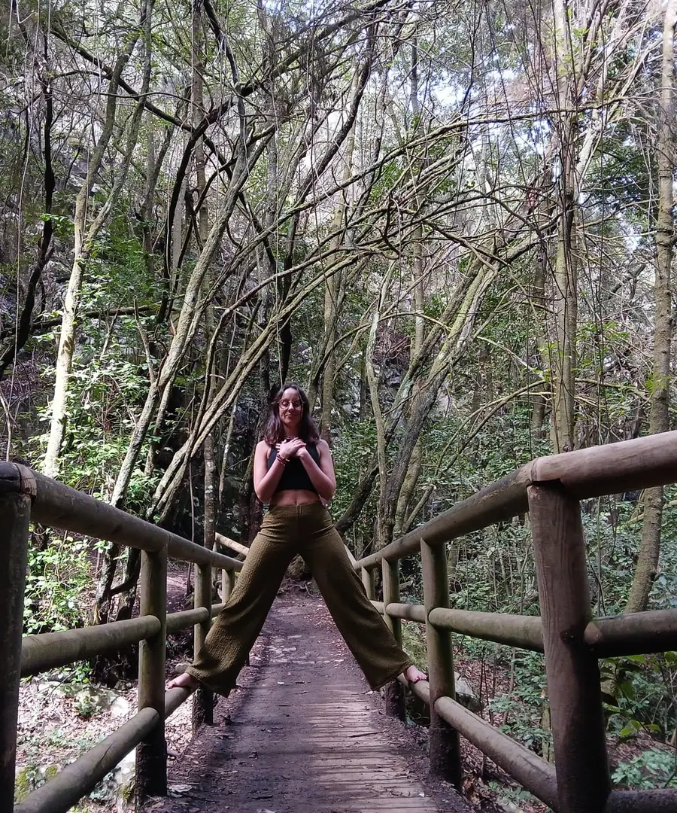
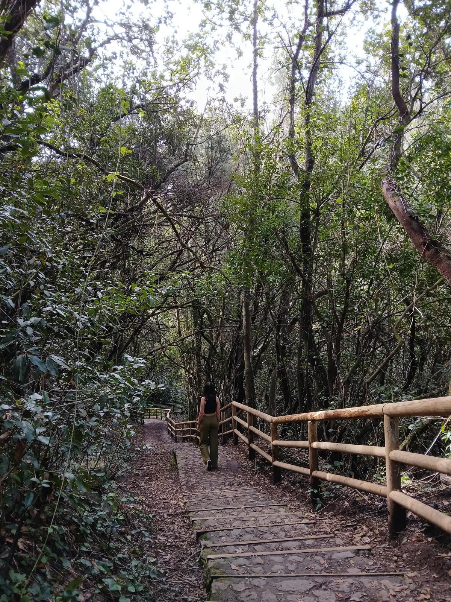
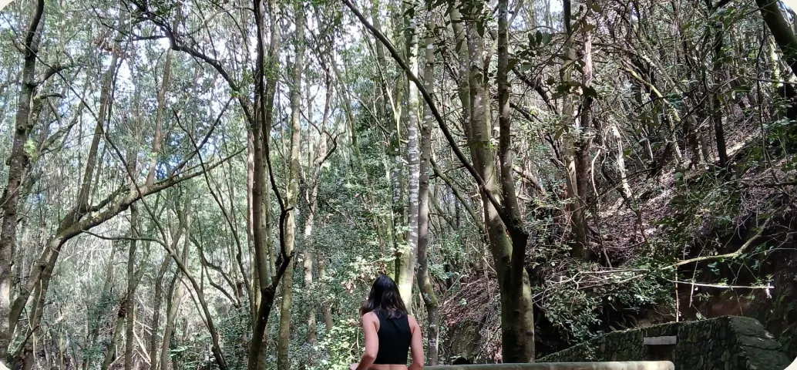
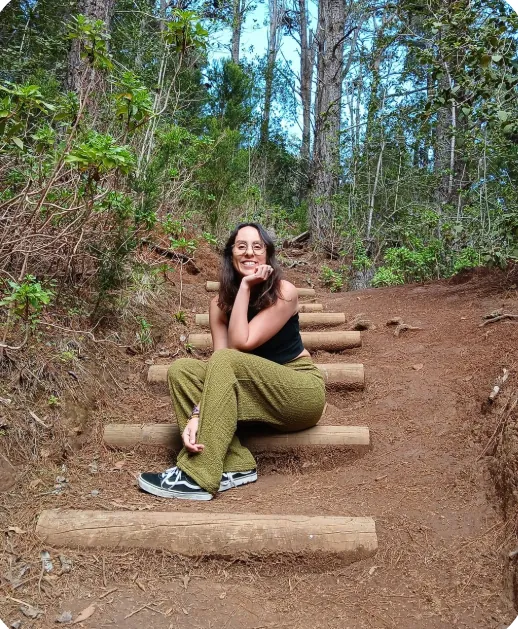

Caminar(se) es un espacio íntimo y ético para acompañar el tránsito entre lo que ya no encaja y lo nuevo que aún no sabes cómo habitar.
Icíar Alonso · Coach
Te acompaño en ese vértigo de perder certezas, relaciones… o partes de ti. No para repararte. Sino para sostenerte mientras eliges no dejarte atrás.

¿Qué es Caminar(se)?
Es un acompañamiento emocional pensado para personas que están atravesando un cambio interno profundo. No se trata de superar una ruptura ni de alcanzar una meta. Se trata de sostenerte en el momento exacto en el que ya no puedes ser quien eras, y aún no sabes quién estás empezando a ser.
Acompaño procesos como estos:
- Te sientes desconectada de la vida que has construido: pareja, entorno, rutinas…
- Has empezado a elegirte… y todo alrededor se mueve o se rompe.
- Estás en pausa, sin certezas, con culpa o miedo por dejar atrás lo que ya no encaja.
- Te reconoces en patrones de dependencia emocional o complacencia, y no quieres seguir ahí.
Caminar(se) es el espacio donde todo eso puede nombrarse, respirarse, y sostenerse sin juicio.
¿Cómo es el acompañamiento?
No hay métodos cerrados, pero sí presencia real y experiencia sostenida.
Trabajo con escucha activa, mirada transgeneracional y herramientas emocionales.
Tú marcas el ritmo. Yo acompaño desde el cuidado y la ética.

El objetivo no es llegar a ninguna parte. Es volver a habitarte.
¿Quieres saber si esto es para ti?
Te ofrezco una llamada gratuita de 20 minutos. Me cuentas lo que estás viviendo. Te cuento cómo trabajo. Y tú decides.
Quiero reservar mi llamada gratuita
Sobre mí
Soy Icíar. Y no trabajo desde fórmulas, sino desde la experiencia. También yo he transitado rupturas internas, identidades que se caen, decisiones que remueven todo.
Mi formación incluye coaching ecointegrativo, inteligencia emocional, análisis transgeneracional y herramientas de acompañamiento familiar y de pareja. Pero lo más importante es que sé lo que significa recomponerse desde dentro.
Lo dicen ellas
Testimonios reales compartidos de forma anónima, con el consentimiento de las personas acompañadas.
“La confianza en mí misma ha crecido muchísimo. Aprendí a mirarme con amor, con paciencia, incluso con orgullo por decisiones que antes dudaba. Es duro, pero necesario. Esta profundidad solo está en procesos como este.”
“Por primera vez me comprometí con cada propuesta del proceso. Incluso lo que no entendía en el momento, luego cobraba sentido. Sentí que Icíar se adaptaba a mí, sin forzarme. Y el espacio físico, esos pasos entre árboles, fue parte de la transformación.”
“Acogimiento. Refugio. Claridad. Honestidad. Pasión. Así describiría lo que viví aquí. Sin juicio, con sostén. Lo recomiendo siempre que alguien me cuenta que se siente perdida.”
Preguntas frecuentes
¿Esto es solo para quien ha tenido una ruptura?
No. No es necesario que haya una ruptura externa. Muchas veces acompañamos un proceso interno: cuando ya no encajas donde estabas, pero aún no sabes dónde ir.
¿Tengo que estar muy mal para empezar esto?
En absoluto. Puedes estar en un momento de duda, de pausa, de miedo… No hace falta tocar fondo. Hace falta solo sentir que no puedes (ni quieres) seguir igual.
¿Es terapia?
No. Es un proceso de acompañamiento emocional. No diagnóstico, no patologiza, no impone. Acompaña desde la vivencia y la escucha.
¿Cuánto tiempo dura?
No hay una duración fija. Los packs están pensados como una forma de comenzar: 3 sesiones pueden darte mucha claridad, y 6 un sostén más profundo. A veces ahí termina. A veces se necesita continuar. Lo importante no es cerrarlo “bien”, sino sentirte acompañada en un proceso que es solo tuyo.
regalo
Por llegar hasta aquí, quiero regalarte algo
Aquí tienes una mini meditación guiada para soltar lo que pesa y volver a tu calma. Haz clic y te llevo a la página para recibirla por email.
Regálame un momento de calmaAl hacer clic irás a una página segura para dejar tu email. Enseguida recibirás tu meditación por correo, guardada en Google Drive para que la disfrutes cuando quieras.
Si no aparece en tu bandeja principal, revisa spam o promociones (a veces se esconde ahí).